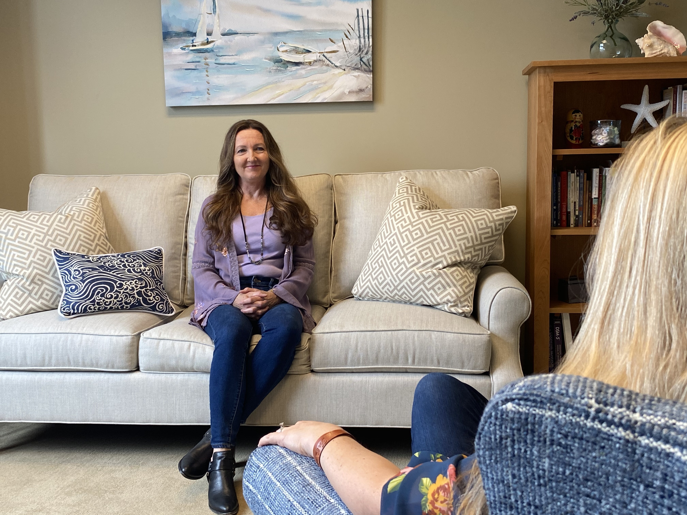

Christine received her Master of Arts in Counseling from MidAmerica Nazarene University with an emphasis in marriage, couple, and family counseling. Additionally, she holds a Bachelor of Science in Accounting and Business Administration degree from the University of Kansas. She worked in public accounting for several years and stayed at home to raise her five children before launching her counseling practice. Christine is a licensed professional counselor in Kansas and is certified by the National Board of Certified Counselors.
Good timber does not grow in ease;
The stronger wind, the tougher trees;
The farther sky, the greater length;
The more the storm, the more the strength;
By sun and cold, by rain and snows,
In tree or man, good timber grows.
Where thickest stands the forest growth
We find the patriarchs of both
And they hold converse with the stars
Whose broken branches show the scars
Of many winds and of much strife—
This is the common law of life.
~ Douglas Malloch, Good Timber, pub 1922

We all find ourselves in places where relationships feel confusing and painful and life feels lonely.
We long to feel seen and heard and valued.
I am compassionate and empathic, and work to create a secure, trusting
therapeutic relationship to facilitate healing and growth.
Let me journey alongside you, listening without judging and helping you
better understand yourself.
I believe in your potential to discover your unique rhythm and balance in
order to live life more fully, develop more satisfying relationships and restore
hope.

Christine particularly enjoys working with women and couples and uses an attachment and experiential perspective. Christine draws extensively from her own life experiences as well as her work with clients whose concerns have included: depression, anxiety, trauma, anger, self-esteem, grief and loss, infertility, postpartum and women’s issues, boundaries, life transitions, relational distress, marriage issues and parenting.
When we honestly ask ourselves which persons in our lives mean the
most to us, we often find that it is those who, instead of giving advice,
solutions, or cures, have chosen rather to share our pain and touch our
wounds with a warm and tender hand. The friend who can be silent with
us in a moment of despair or confusion, who can stay with us in an hour
of grief and bereavement, who can tolerate not knowing, not curing, not
healing and face with us the reality of our powerlessness, that is a
friend who cares.
~Henri Nouwen, Out of Solitude
-
Policies
$95 for 50 minute session
Insurance:
I do not accept any insurance. I will provide a superbill upon request
Accepted Payment Forms:
I accept cash, check and credit cards
Payment:
Payment is due at each session.
Cancellation:
I kindly request that you give 24-hour notice if you need to cancel your appointment. If you do not give notice you will be charged the full session fee. Late notice and no-show fees are automatically charged to your credit card.
Christine Walsh MA, LPC
A companion for the journey
14221 Metcalf Ave, Suite 130
Overland Park, KS 66223
Contact me:
913-274-9790
christinewalshcounseling@gmail.com
If you are currently experiencing a mental health crisis, I advise you to contact 911 or visit your local emergency department for immediate care.
National Suicide Prevention Lifeline 1-800-273-8255